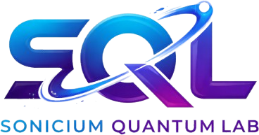

Quantum Computing
· Chapter 1
Quantum Computing
Chapter 1
Qubits, Superposition, and Measurement
Welcome to the fascinating world of
quantum computing
.

An educational series
Written by
Hussein Billah
Published by
Sonicium Quantum Lab Limited
(SQLL)
Qubits
Superposition
Measurement
classical vs quantum
·
represented
→
transformed
→
measured
Let's begin.
1
Why Quantum Computing?
Laptops
Smartphones
Supercomputers
Classical computers
each bit is either zero or one
Simulating quantum systems gets hard as they grow
Quantum state of
n
electrons (spins): up to
complex amplitudes
Nature operates according to quantum mechanics
1981
Richard Feynman
“Simulating Physics with Computers” (published 1982)
Nature
quantum mechanics
Quantum computer
quantum principles
simulate quantum systems more naturally ·
potentially
outperform classical computers on
certain
problems
Quantum computers are
not faster for everything
Email
classical ✓
Video
classical ✓
Everyday maths
classical ✓
Potential advantages for
particular problems
whose structure lets quantum effects be used effectively
First: understand the
qubit
2
From Classical Bits to Qubits
off = 0
on = 1
A classical bit is a switch
Qubit
quantum bit · a two-level quantum system
ket zero
ket one
+ superpositions of both
A general qubit state
α, β — probability amplitudes
complex numbers
example:
Normalization condition
all outcome probabilities add up to one
Qubits can be built with different technologies
Superconducting circuits
Trapped ions
Neutral atoms
Photons
Different hardware —
the same mathematics
:
3
Dirac Notation
Dirac notation
after physicist Paul Dirac
computational basis
computational basis
Bras and inner products
The inner product
relates two quantum states
orthogonal states
a precise language for quantum information
4
Quantum Superposition
“both 0 and 1 at the same time”
a useful introduction —
not a complete explanation
heads or tails? —
ordinary uncertainty
about a classical object
Quantum superposition is different
amplitudes can be
negative
or
complex
:
amplitudes can interfere
Same measurement statistics: 50% · 50%
…but different states:
relative phase
Superposition does
not
mean reading every answer at once
Algorithms shape amplitudes so useful outcomes become
more likely
— through interference
5
Measurement and the Born Rule
qubit
→
measure
→
result:
0
or
1
The Born rule
probability of
0
= squared magnitude of
α
probability of
1
= squared magnitude of
β
Measurement changes the state
before
result: 0
after
measure again
0
0
0
same basis → same result
“collapse” of the quantum state
each run of a fresh copy gives one result · simulated shots, expected 75% : 25%
Measurement is part of the computation — not a passive look
6
The Bloch Sphere
|0⟩
|1⟩
|+⟩
|−⟩
How can we visualize one qubit?
a pure state = a point on the sphere, set by two angles θ and φ
North pole
·
South pole
Other points
— different superpositions
Single-qubit gates = rotations
X: 180° about x · H: 180° about (x+z)/√2
7
Quantum Gates and Entanglement
Quantum gates transform quantum states
X
like a classical bit flip
Z
changes the relative phase
H
Hadamard: basis state → superposition
Interacting qubits can become
entangled
The Bell state
qubit 1
qubit 2
00 and 11, each 50% (ideal)
never 01 or 10
cannot be split into two independent single-qubit states — the defining feature of entanglement
Entanglement does not allow information to travel faster than light
8
Quantum Interference
A central principle behind quantum algorithms
operations change measurement probabilities
algorithms: raise useful outcomes · suppress unwanted ones
9
Building a Quantum Circuit with Qiskit
Qiskit — a framework for building and studying quantum circuits
in kets, the first digit is the first qubit (q0)
Ideal simulation
|01⟩ and |10⟩ have zero probability
Real quantum hardware
illustrative example, not measured data · noise · imperfect gates · measurement errors · environment
reducing noise: a key research area
Conclusion
Qubit
Superposition
Born rule
Bloch sphere
Gates · Entanglement
Interference
Quantum computers do
not
simply provide every answer at once
Their potential:
carefully controlling quantum states and interference
for particular problems
✓
Chapter One complete: Qubits, Superposition, and Measurement
Written by
Hussein Billah
Published by
Sonicium Quantum Lab Limited
(SQLL)
Next chapter
The quantum circuit model
Toward the Deutsch–Jozsa algorithm
Thank you for joining us
Keep learning · keep questioning · keep exploring